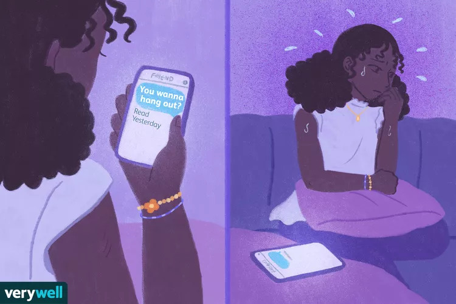

We all have some experience with loneliness. That feeling of being alone with no one to rely on can be very distressing. In fact a more formal definition of loneliness would argue that if it does not cause distress, then it is not loneliness at all but merely social isolation. If the loneliness gets bad enough, then this distress can become debilitating to anyone, so it is no surprise that loneliness can be an especially big issue for people with preexisting mental disorders, such as borderline personality disorder. This is why Tabea Nenov-Matt et al. have studied patients with persistent depressive disorder and patients with borderline personality disorder to examine the relationship between loneliness and other factors among these patients, though we will only be focusing on the patients with BPD.
The finding I want to highlight in particular is the strong correlation found between loneliness and childhood emotional abuse and neglect as well as the correlation found between loneliness and rejection sensitivity among patients with BPD. The correlation with childhood emotional abuse and neglect may make things seem straightforward: these people grew up in environments that messed up their ability to manage their emotions. Not only did this trauma likely lead to the BPD in the first place, but it would also make it difficult to emotionally connect with other people, thus increasing loneliness. This line of thinking is likely not wrong, but the study did also fail to find any very significant correlations between loneliness and various social network characteristics among the patients with BPD. In order to get a fuller story, we also need to look at rejection sensitivity.
 A depiction of rejection sensitivity, from Verywell Mind's article "Understanding Borderline Personality Disorder Triggers"Nenov-Matt et al. formally define rejection sensitivity as “a personality disposition to anxiously expect, readily perceive, and overreact to rejection.” We can see this in the image above as even though there are numerous explanations for why the girl’s friend may not have responded to her text, such as being busy or simply forgetting, she fears the worst and her mind automatically assumes she’s been rejected. Rejection sensitivity is important to explaining the loneliness felt by people with BPD. The study found that the indirect effects of both childhood emotional abuse and neglect on loneliness through rejection sensitivity were significant. Thus supporting people with BPD who are facing loneliness isn’t just about helping them to “get out there”, it’s also about helping them cope with a fear of rejection, or at least not making it worse by actually rejecting them.
Information by Tabea Nenov-Matt et al.'s "A Cross-Diagnostic Study in Persistent Depressive Disorder and Borderline Personality Disorder" · Images by Verywell Mind